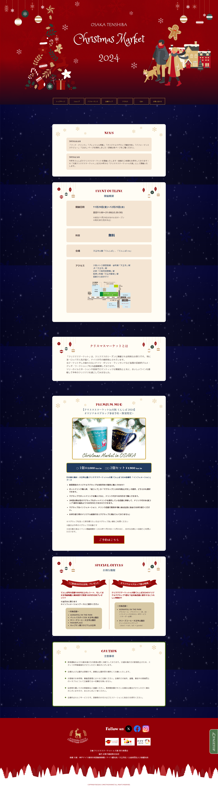
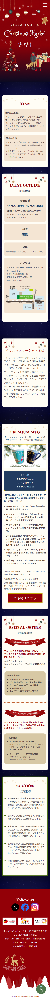

Chirstmas Market
【概要】
グループ課題制作として、既存のクリスマスマーケットのリニューアルサイトを制作
【制作期間】
1ヶ月
【使用ツール】
Photoshop / Figma / VScode
【目的】
- ドイツを含めたヨーロッパの伝統クリスマスを知ってもらいたい
- 各国の伝統料理やデザート、ドリンクをクリスマスマーケットを通じで知ってもらいたい
【ターゲット】
- 20代から40代のお酒好きな方
- 海外が好きな方
- 本場のクリスマスマーケットを楽しみたい方
【デザインイメージ】
- コンセプト：大切な人と一緒に過ごすクリスマスサイト
- カラー：大人っぽい深みのあるダークレッド、ダークブルーをメインカラーとして、ゴールドをアクセントカラーとして使用
- 使用フォント：Princess Sofia / empus Sans ITC / Miltonian Tattoo / Kaisei Opt/M PLUS 1p
【工夫した点】
全体のトーンはイルミネーションとマーケットの組み合わせからイメージする「特別感」を表現し、期待感が持てるようなデザインを意識しました。
サイト全体から一目でクリスマスマーケットがイメージでき、イルミネーションのような華やかさを演出しました。
「アクセス」や「会場マップ」に関しては検索数が多いことを想定し、ナビゲーションへ設置し簡単に飛べるように工夫しました。

